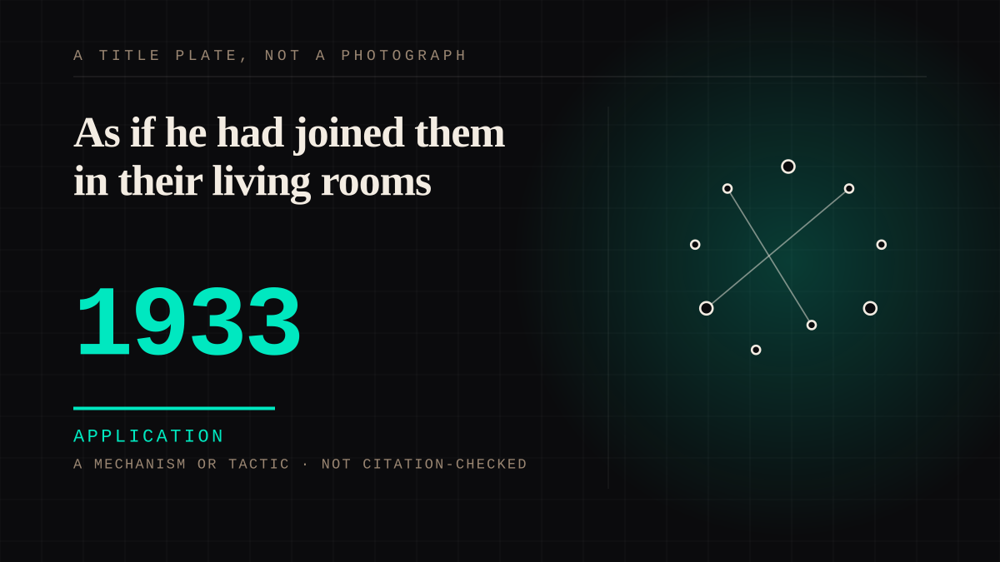

A mechanism or tactic · 1933 · Broadcast
As if he had joined them in their living rooms
Franklin Roosevelt talked to the radio as if the listener were already in the room, and he did it often enough between March 1933 and June 1944 that the habit became a form - one he did not name. There is no solid definition of what counted as a chat; the estimates run from twenty-seven to thirty-one. The count does not matter. The sitting next to a fireplace does.

The informality was written into the text, which is the thing to keep. Roosevelt did not happen to sound relaxed; the speeches were built so that he would. The Library of Congress's account of the recordings puts it plainly: "their informality of wording and phrase was built into the text", and "The President appeared to talk with his listeners rather than lecturing at them." The first talk, on 12 March 1933, was delivered from the Diplomatic Reception Room with the President actually sitting next to a fireplace. The room is the argument: he is somewhere specific, you are somewhere specific, and the distance between them is being described rather than hidden.
The name came later and from somebody else. The Library of Congress credits Washington broadcast executive Harry Butcher with it "on the occasion of the second one"; the Roosevelt library says the term "was not coined by FDR" but by a reporter describing the speech of 7 May 1933. Both are kept, because both are compatible and because neither makes it his. The form is famous under a name its author did not choose, which is the correct outcome for a form built out of other people's living rooms.
The count is honestly open and says so: "There was no solid definition as to what constituted a Fireside Chat. As a result, there is some dispute as to the total number of Fireside Chats that FDR delivered." The Library of Congress has the range at between twenty-seven and thirty-one, the last in June 1944. A form people recognise before a committee defines it is a form, and a form with a number attached is a list. The dispute is not a defect in the record; it is the record of something that was defined by being listened to.
What it was for is in the mechanics. All the national radio networks carried them - hundreds of stations nationwide - opening with "my friends" and, the first time, with "I want to talk for a few minutes with the people of the United States about banking...". That sentence assumes you are already there and already listening; "my friends" is not a form of address but a claim about the relationship, made by an office that held the whole schedule. The first talk "was credited with averting widespread panic." Nobody in the audience could answer, and that is not a flaw in the design. It is the design, applied on purpose, by a government that had decided the thing to do next was to be in the room with you.
Application. One-sided attachment put to work on purpose. Creator economies, community, fandom as infrastructure, and the things that genuinely help people. Not automatically good - a tool with an obvious use is a tool that will also get a bad one.
Where it sits
1900 1900-1949 · 1933 1949
Provenance · 2 source record(s)
- unverifiedThe naming, the first talk, and the three quotations the entry is built on. That "These 'Fireside Chats' (so named by Washington broadcast executive Harry Butcher on the occasion of the second one) were planned as conversations rather than stiff public speeches."; that they were carried by all the national radio networks, meaning hundreds of stations nationwide; that "most agree that between 27 and 31 were broadcast by the time of the last one in June, 1944"; that the first chat was delivered on March 12, 1933 from the Diplomatic Reception Room "with the President actually sitting next to a fireplace"; that "The talk was credited with averting widespread panic."; that "their informality of wording and phrase was built into the text"; and that "The President appeared to talk with his listeners rather than lecturing at them." Also the opening of the first talk, "I want to talk for a few minutes with the people of the United States about banking...", and the customary opening, "my friends". Read through a search index rather than fetched, so the record is unverified: a reader can open this page, this agent did not.Christopher H. Sterling, essay on the fireside chats, National Recording Preservation Board, Library of Congress (PDF) ↗
- unverifiedThe purpose in the President's own terms, the attribution of the name, and the honest gap in the count. "He considered it most effective to talk to the people as if he had joined them in their living rooms or kitchens for a relaxed, informal conversation about one or two specific topics."; "The term 'Fireside Chat' was not coined by FDR, but rather was used by a reporter to describe FDR's speech of May 7, 1933."; and "There was no solid definition as to what constituted a Fireside Chat. As a result, there is some dispute as to the total number of Fireside Chats that FDR delivered." The library's attribution to "a reporter" and the Library of Congress's to Harry Butcher are compatible and both are kept. Read through a search index rather than fetched, so the record is unverified: a reader can open this page, this agent did not.Franklin D. Roosevelt Presidential Library and Museum, "Franklin D. Roosevelt's Presidency" ↗
Connected · 4 out, 1 in
It sits in
The full timeline → · The database → · See it in the atlas →